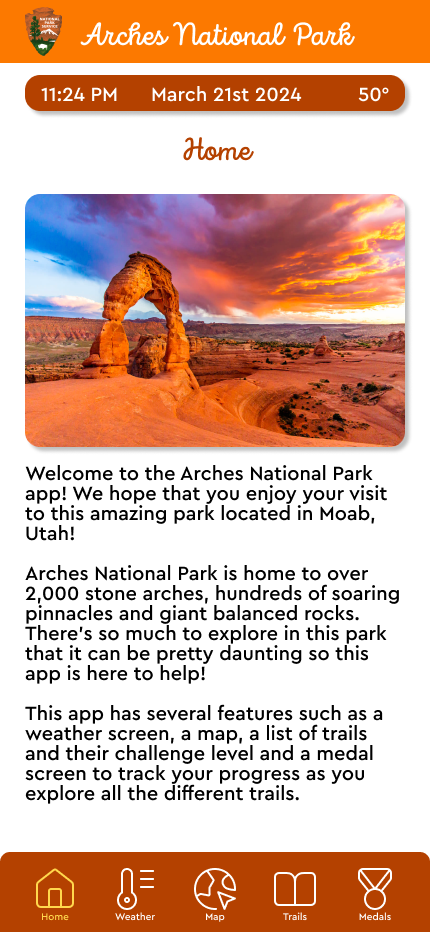
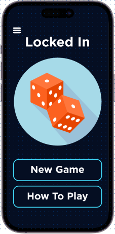

My Figma Projects
I have been using Figma, Adobe products and other design materials
for around 2 years. These designs show off a variety of projects
that I have worked on.
IS&T Website Redesign
UVU IS&T Logo
For this project I was tasked with redesigning a website for the UVU
Information Systems and Technology Department. As part of this project
I did user research to determine what students would most like to see implemented
to help the website be more accessible.
Through various versions of the website including wireframes and a functional prototype
I learned how to conduct user research and implement it in a way to help users.
Figma Link to Designs
Figma Link to Case Study
Arches National Park App

A Screen from the Arches National Park App
For this project I decided to create a prototype of a
National Parks app. I chose to create different features such
as a home screen, a map, a trails screen and a list of medals
that a visitor had achieved by going on trails and seeing the
national park.
I also did a write up of this project on Medium where I go over
all of the specific features of my design.
Figma Link
Medium Article Link
Locked In App

Locked In Mobile Home Page
This design was created as a mobile companion to a dice game. It has
several features such as keeping scores, rolling dice digitally, and
having a scoreboard screen. As part of this design I created it using
a mobile, tablet and desktop design that keeps the same features.
I also made a case study presentation of my design which you can find
below. This goes over my design process and the different things I
changed to make the design better over time.
Figma Link
Locked In Case Study Presentation Link
Children and the Earth
A Screen from Children and the Earth
For one of my classes this semester, we were asked to pick a nonprofit
local organization and redesign their website for them. I found one
called Children and the Earth that seemed like a great organization
that needed a great website to go along with it. Over the course of
the semester we improved our designs and we finally ended with making
a mobile website that is completely prototyped with animations and menus
between pages. The link to the figma file is included below
Figma Link
Feit Electric App
Feit Electric Home Screen
Another project that I worked on this semester was redesigning the
Feit Electric App. This is an app that is designed to connect to
smart devices in your home so that you can control them. The only
issue is that the app doesn't like as high tech as the concept itself.
For this reason I decided to step in and go through the process of
creating moodboards, then sketches, then wireframes and finally
surface comps that could be used on an actual application. I will
include a figma file below.
Figma Link
AOL Mail App
AOL Mail Inbox Screen
The final Figma project that I will touch on is the AOL Mail App
redesign. This one was fun because AOL Mail has a very old interface
that hasn't been updated in quite some time. Our project was to figure
out things that made other email services nice and to implement some
of those features while redesigning the UI. I decided to simplify lots
of the things AOL was doing and only stick to basic blue colors. I
thought the end result turned out pretty nicely and you can see it all below.
Figma Link